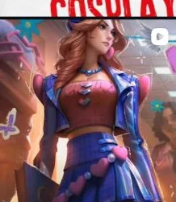

ARCANE · COSPLAY: SAKURAI
FOTOGRAFIA: CRÉDITO A CONFIRMAR
Caitlyn
ARCANE · PERSONAGEMUm espaço individual para o cosplay de Caitlyn, com os registros disponíveis na prévia e uma área reservada para as fotografias de maior resolução da artista.
Caitlyn em detalhes.
Registros disponíveis na demonstração. Imagens de prints foram tratadas; os originais da artista poderão substituí-las.

Créditos e origem: Cosplay de Caitlyn informado como concluído pela Sakurai. Universo: Arcane. A imagem ilustrada é referência visual, não arte autoral da cosplayer. Fotógrafos, autores e autorizações pendentes de identificação.
O arquivo de Caitlyn continua aberto.
Ao receber fotografias originais e comentários da Sakurai, esta página poderá reunir detalhes do figurino, caracterização, bastidores, referências e um buildbook dedicado. Nenhuma técnica ou etapa foi atribuída sem confirmação.
Galeria original • Bastidores • Notas autorais • Referências com créditos
Ver como funcionam os diários ↗